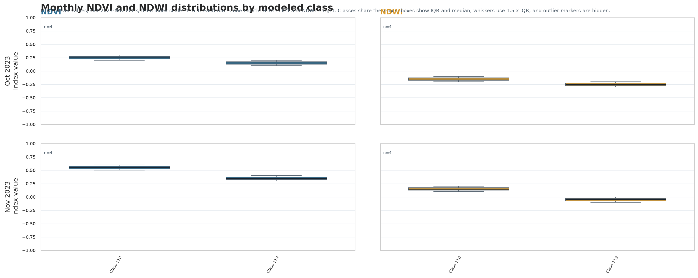
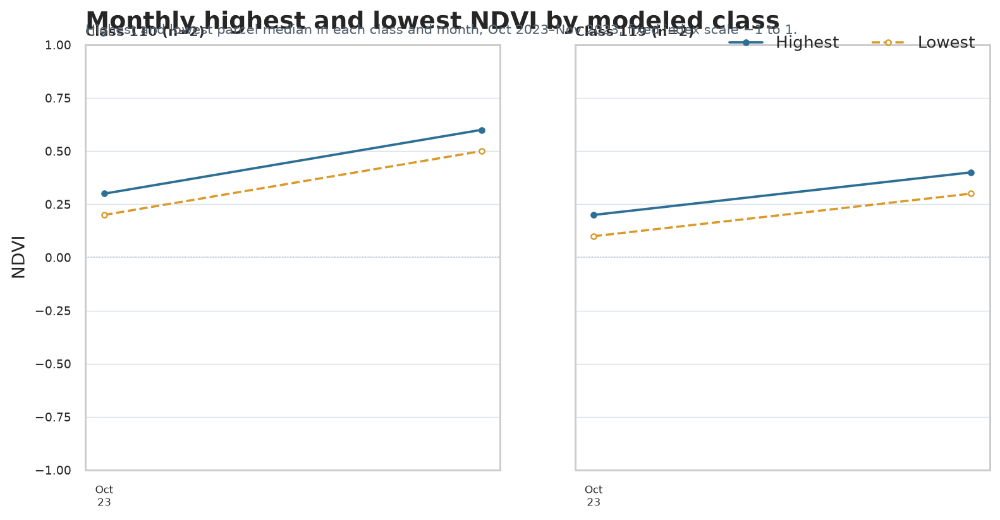
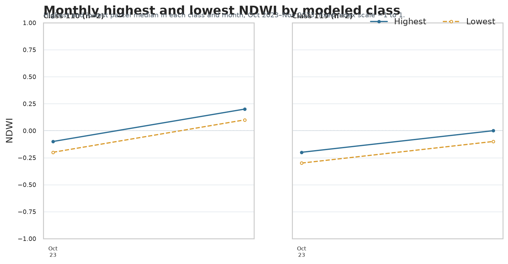
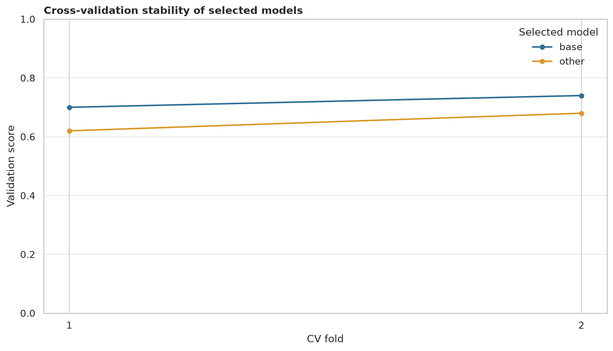
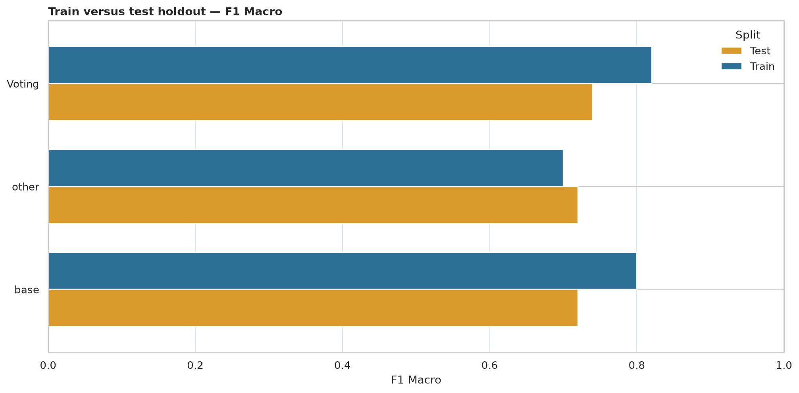
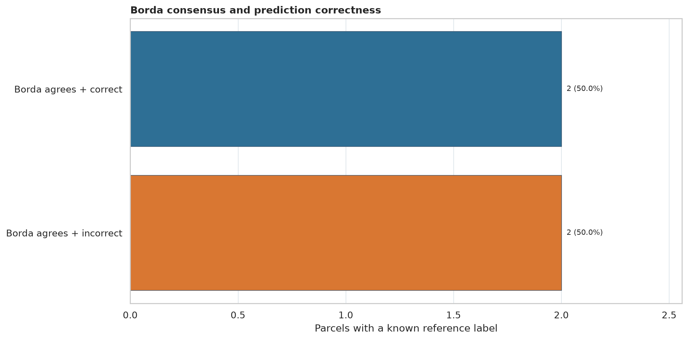
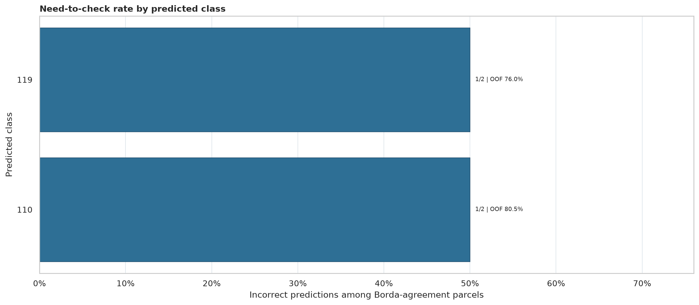
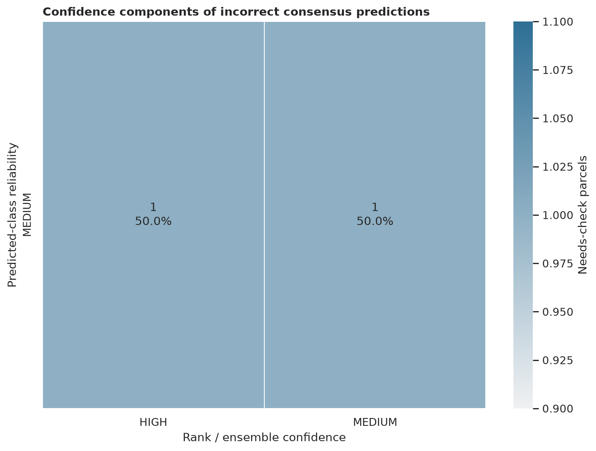

Final Crop Classification Dashboard
Study-area coverage, crop seasonality, cross-validation stability, holdout performance, final model selection, and prediction confidence diagnostics.
Evaluation Snapshot
| modeled_parcels | 4 |
|---|---|
| train_parcels | 3 |
| spatial_holdout_parcels | 1 |
| modeled_classes | 2 |
| best_cv_model | base |
| best_mean_cv_score | 0.7200 |
| final_strategy | soft_voting |
| selected_models | ['base', 'other'] |
| test_f1_macro | 0.7400 |
| train_test_f1_macro_gap | 0.0800 |
| prediction_validation_rows | 4 |
| prediction_accuracy | 0.5000 |
| borda_agreement_rate | 1.0000 |
| need_to_check_rows | 2 |
| need_to_check_rate_among_borda_agreement | 0.5000 |
Study Area and Parcel Coverage
The interactive map uses OpenStreetMap tiles when network access is available.
Seasonal Crop Profiles
The combined Seaborn figure has one row per month and two columns: NDVI on the left and NDWI on the right. Every panel places modeled class/label on the shared x-axis and the parcel-level index distribution on the y-axis. Boxes show the interquartile range and median; whiskers use 1.5×IQR and outlier markers are hidden for readability. The high/low line figures show each class's highest and lowest parcel median in every month.



Cross-Validation Stability
Only selected strategy members are shown. Fold scores use each selected model's best hyperparameter setting; the table follows the configured CV ranking score.
| rank | model | mean_cv_score | cv_std | selection_score | selected |
|---|---|---|---|---|---|
| 1 | base | 0.7200 | 0.0300 | 0.6900 | Yes |
| 2 | other | 0.6500 | 0.0400 | 0.6100 | Yes |

Train versus Spatial Holdout
The chart contains only selected models and the final strategy result, using the primary selection metric. Test/holdout values are green for selected models and yellow for the final voting result. Each gap is train minus test: negative gaps are green because test is higher, positive gaps are red because test is lower, and zero is neutral.
| model | train_f1_macro | test_f1_macro | f1_macro_gap | train_accuracy | test_accuracy | accuracy_gap |
|---|---|---|---|---|---|---|
| Voting | 0.8200 | 0.7400 | 0.0800 | 0.8700 | 0.8100 | 0.0600 |
| base | 0.8000 | 0.7200 | 0.0800 | 0.8500 | 0.7900 | 0.0600 |
| other | 0.7000 | 0.7200 | -0.0200 | 0.7800 | 0.7000 | 0.0800 |

Prediction Confidence Diagnostics
These diagnostics use only parcels with known original reference labels. The overview shows whether Borda consensus aligns with correctness; the class chart identifies where incorrect consensus predictions concentrate; and the component matrix shows how class reliability and rank confidence combine inside the need-to-check cohort. Unknown fill rows are excluded from all correctness rates.
| predicted_class | total | need_to_check | median_probability | median_borda_margin | confident_error_burden | need_to_check_rate_percent | oof_precision_percent |
|---|---|---|---|---|---|---|---|
| 110 | 2 | 1 | nan | nan | nan | 50.0000 | 80.5000 |
| 119 | 2 | 1 | nan | nan | nan | 50.0000 | 76.0000 |



Best Model and Voting Result
| selection_type | soft_voting |
|---|---|
| selected_models | ['base', 'other'] |
| selected_metric | cv_score_minus_std |
| selected_cv_score | 0.6900 |
| holdout_f1_macro | 0.7400 |
No rows to display.